01Boton CONSULTAR
Al presionar Consultar el sistema recarga los datos del encabezado
(estado, fecha de solicitud y fecha recibida) y la tabla de materiales correspondientes
a la orden actualmente seleccionada en el combo ID Orden.
Solo esta disponible cuando no se esta en modo edicion.
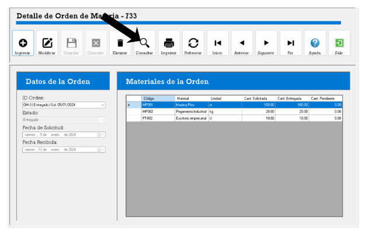
1.png — Boton Consultar activo
02Boton IMPRIMIR
Al presionar Imprimir se abre el formulario
Frm_Reporte_Detalle en una ventana emergente, mostrando el reporte
imprimible del detalle de la orden activa. Solo esta habilitado cuando hay una orden
cargada y no se esta editando.
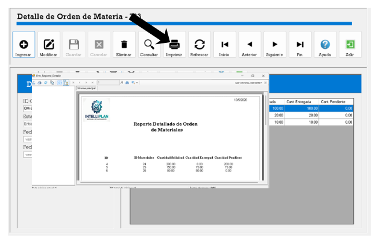
2.png — Reporte de detalle
03Boton REFRESCAR
Al presionar Refrescar el sistema limpia completamente
el formulario (vacia el combo de orden, el estado, las fechas y la tabla de materiales)
y vuelve a cargar los catalogos de ordenes y estados desde la base de datos.
Muestra un aviso de confirmacion al finalizar. Siempre esta disponible.
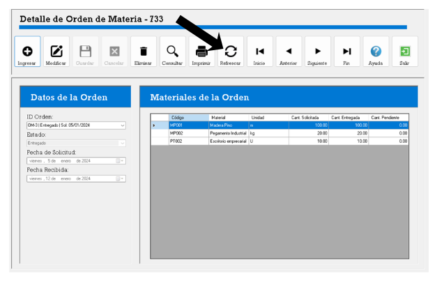
3.png — Formulario limpio tras refrescar
04Navegacion por filas: Inicio / Anterior / Siguiente / Fin
Estos botones permiten moverse por las filas de la tabla Materiales de la Orden:
Inicio Selecciona la primera fila de la tabla.
Anterior Sube una fila respecto a la fila actual.
Siguiente Baja una fila respecto a la fila actual.
Fin Selecciona la ultima fila de la tabla.
Todos estos botones se deshabilitan automaticamente cuando el formulario entra en modo edicion.
Inicio Selecciona la primera fila de la tabla.
Anterior Sube una fila respecto a la fila actual.
Siguiente Baja una fila respecto a la fila actual.
Fin Selecciona la ultima fila de la tabla.
Todos estos botones se deshabilitan automaticamente cuando el formulario entra en modo edicion.
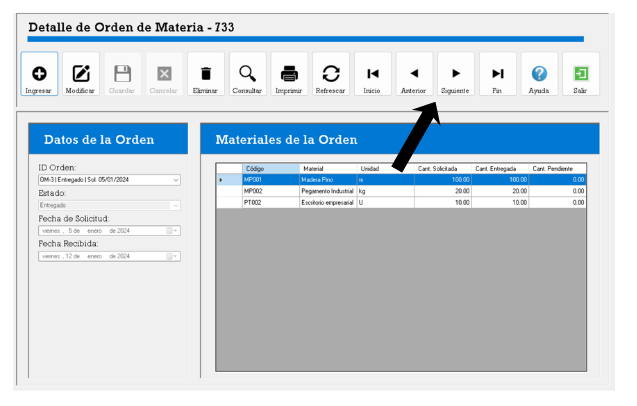
4.png — Navegacion entre filas de materiales
05Boton SALIR
Al presionar Salir se cierra el formulario actual.
Siempre esta disponible, tanto en modo lectura como en modo edicion.
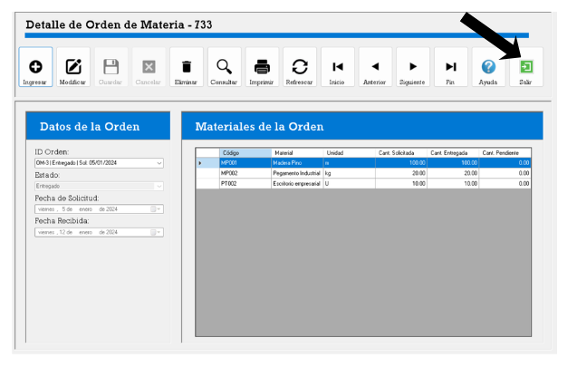
5.png — Cerrar formulario
06Combo ID Orden
Al seleccionar una orden del combo ID Orden el sistema
carga automaticamente el encabezado (estado y fechas) y la tabla de materiales de esa orden.
Si el formulario fue abierto desde otro modulo con un ID preseleccionado, el combo
apuntara directamente a esa orden al abrirse.
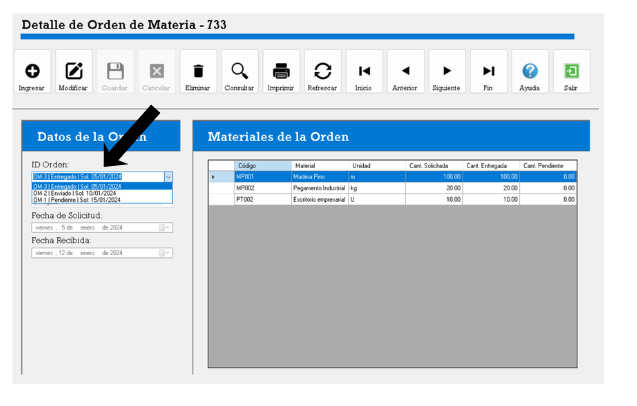
6.png — Seleccion de orden desde el combo
07Campo ESTADO
Muestra el estado actual de la orden seleccionada (ej: Enviado, Pendiente, Finalizado).
Este campo solo se puede editar cuando el formulario esta en
modo edicion (tras presionar Modificar).
En modo lectura permanece bloqueado.
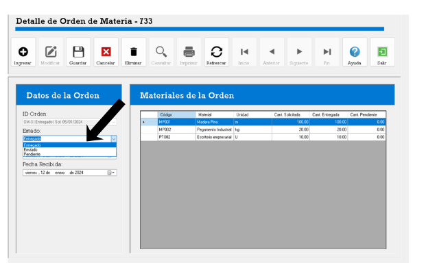
7.png — Campo Estado editable en modo edicion
08Campo FECHA DE SOLICITUD
Muestra la fecha en que se creo la orden. Este campo es siempre de solo lectura;
no puede modificarse en ningun modo. Refleja la fecha original registrada en la base de datos.
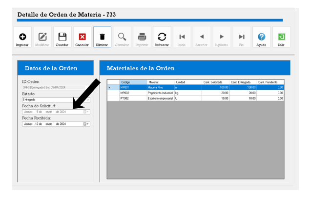
8.png — Fecha de Solicitud bloqueada
09Campo FECHA RECIBIDA
Muestra la fecha en que se recibio la orden. Este campo solo se puede editar
cuando el formulario esta en modo edicion. Su nuevo valor se guarda junto al estado
al confirmar con Guardar.
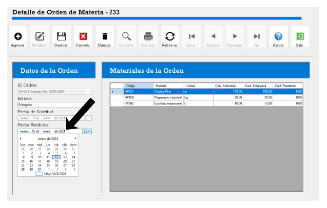
9.png — Fecha Recibida editable en modo edicion
10Tabla MATERIALES DE LA ORDEN
Muestra el listado de materiales asociados a la orden seleccionada con las columnas:
Codigo, Material, Unidad, Cant. Solicitada, Cant. Entregada y
Cant. Pendiente. La tabla es siempre de solo lectura;
los datos no se pueden modificar directamente desde esta vista.
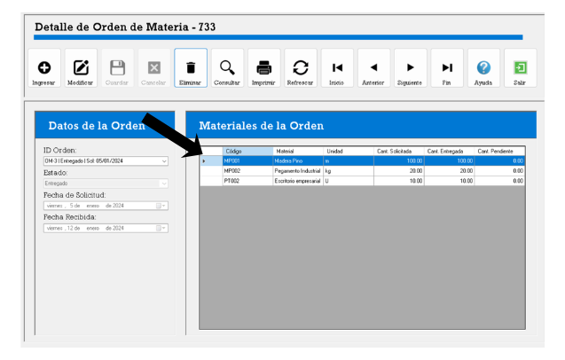
10.png — Tabla de materiales de la orden
11Boton MODIFICAR
Al presionar Modificar el formulario entra en
modo edicion: se habilitan los campos de Estado y
Fecha Recibida, y se bloquea el combo de ID Orden para evitar
cambios accidentales de registro. Solo esta disponible cuando hay una orden cargada
y no se esta editando.
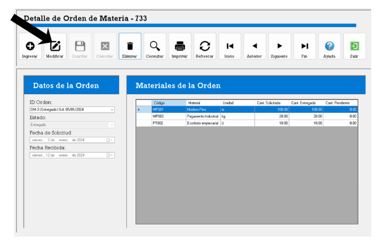
11.png — Formulario en modo edicion
12Boton GUARDAR
Al presionar Guardar el sistema valida que se haya
seleccionado un estado y luego actualiza en base de datos el Estado
y la Fecha Recibida de la orden. Si la operacion es exitosa muestra
un mensaje de confirmacion, recarga los datos y vuelve al modo lectura.
Solo esta habilitado en modo edicion.
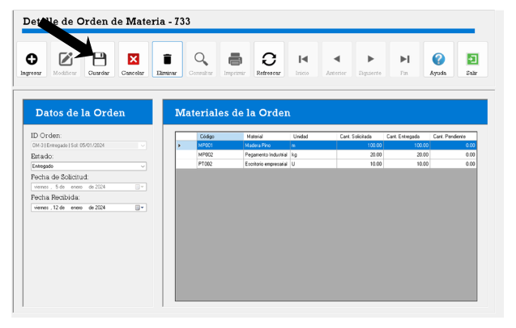
12.png — Confirmacion de guardado
13Boton CANCELAR
Al presionar Cancelar aparece un dialogo de confirmacion
preguntando si desea descartar los cambios. Si el usuario confirma, el sistema restaura
los datos originales de la orden, desbloquea el combo de ID Orden y regresa al
modo lectura sin guardar ningun cambio. Solo esta habilitado en modo edicion.
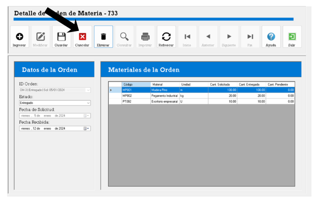
13.png — Dialogo de cancelacion de edicion